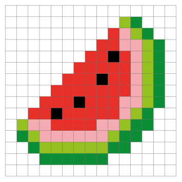

The Pixel Gallery Project is the creation of Ms. Perla's Grade 2 art class, as part of an initiative to discover the beauty of individual design. For the project, students started with 2D pixel art, illustrating either a self-portrait or a character in the style of a Minecraft character. The project demanded extensive details by creating characters in the style of Minecraft, and great effort in generating individual works. Each student created creative and quality work in the time given.
For the next phase of the project, middle school students in the Coding and Web design elective (taught by Mr. Davison), developed a website to showcase and publish the younger students' work. The 2D pixel is displayed in an element-specific gallery. You can enlarge the images by tapping/clicking on them. Students spent several weeks using web languages such as HTML5/CSS/JS to perfect the aesthetics and functionality of the site.

The new Pixel Gallery project demanded a tremendous deal of time and energy from the students. Still, impressively, our students finished the development with great care and design.
Special commendation to Grade 8 student, Larry Lee and G12 student, Joshua Zhan for their assistance with server side configuration and debugging.